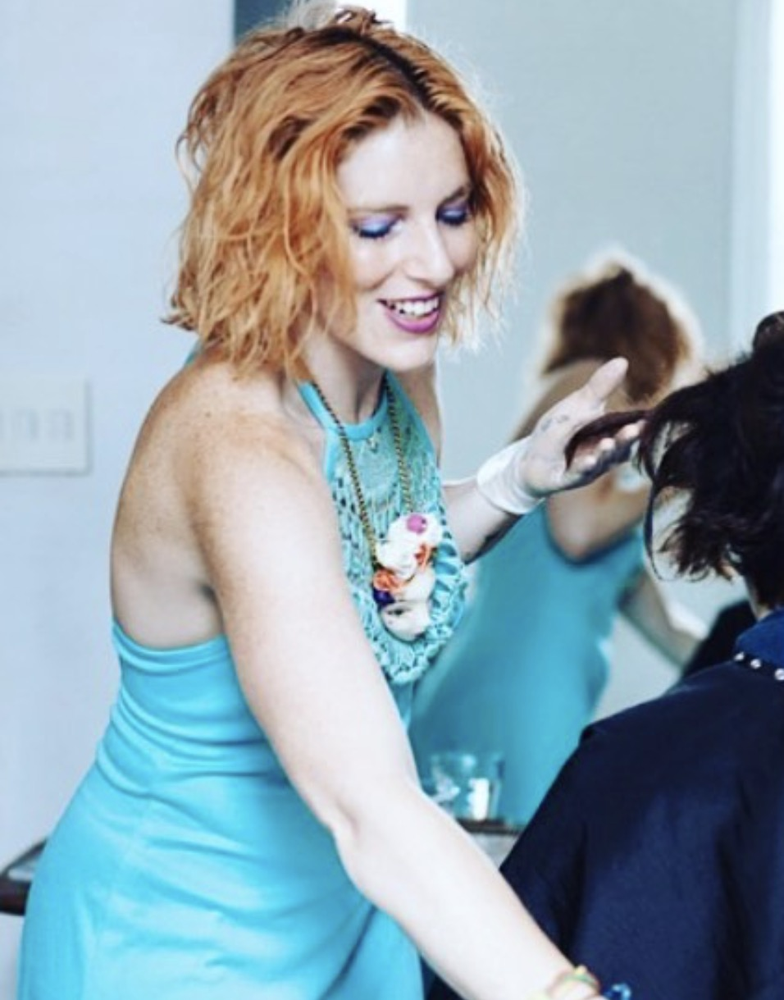

 Roxie Darling has been exploring the art and healing of color since 2006, starting her career as a Hair Colorist in New York City. After working in prestigious salons, honing her craft, being a creative director for innovative brands and working with celebrities and also doing editorial work, Roxie has recently decided to take her career in a new direction, working with clients to do deeper healing through energy work and using color as a healing modality. Roxie is a certified Shamanic Reiki Practitioner and uses color in all ways to help balance clients energy and uses color to manifest different desires for her clients, all based upon consultation. She is a painter and works with dying textiles to color heal her clients, and is currently conducting a photography experiential project called Create Your Aura, where people are able to actively choose the energy they surround themselves with. Roxie also still offers hair color services, however using her intuition, the client experiences a deeper transformation of their metaphysical self along with their physical representation. This is called Intuitive Haircolor.
For inquiries or collaboration requests, email roxiedarling@gmail.com. Intuitive haircolor consultations can be booked directly at Suite Caroline Salon in NYC 212-431-4400.